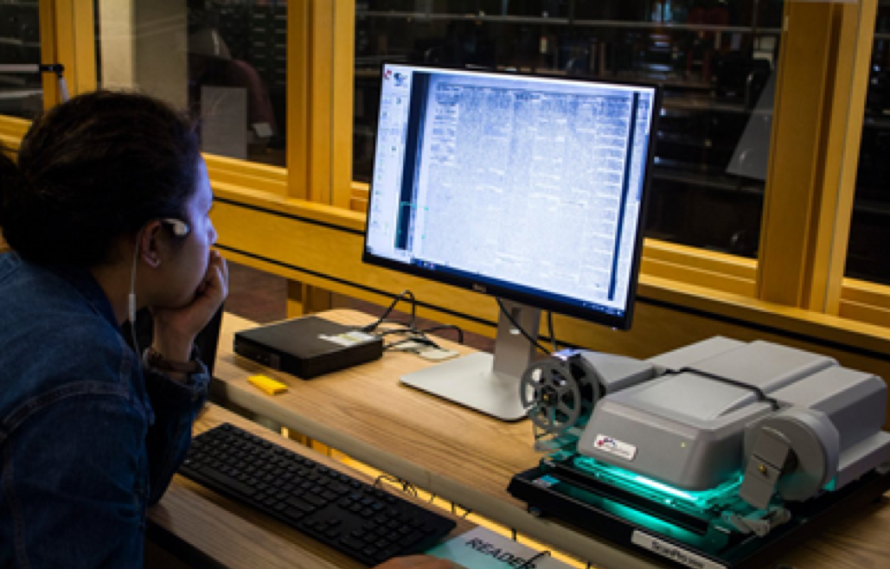
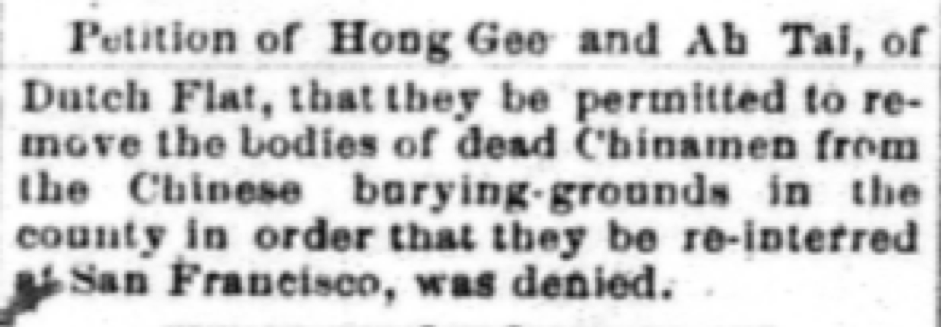
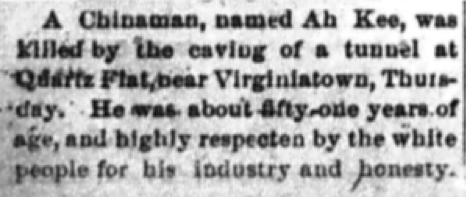
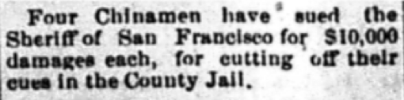
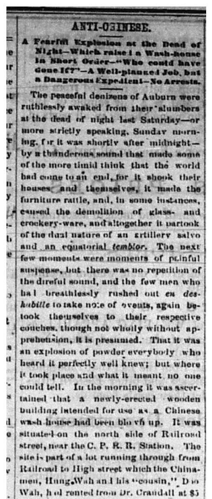
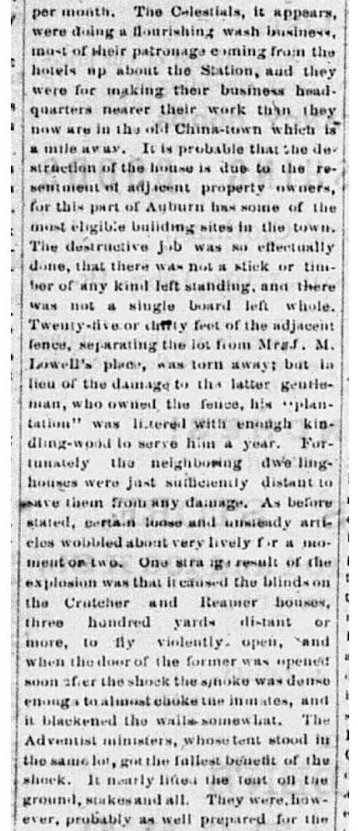
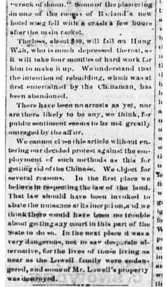
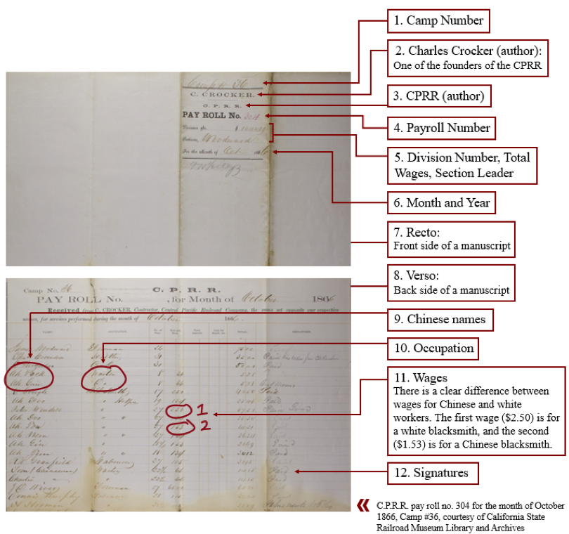
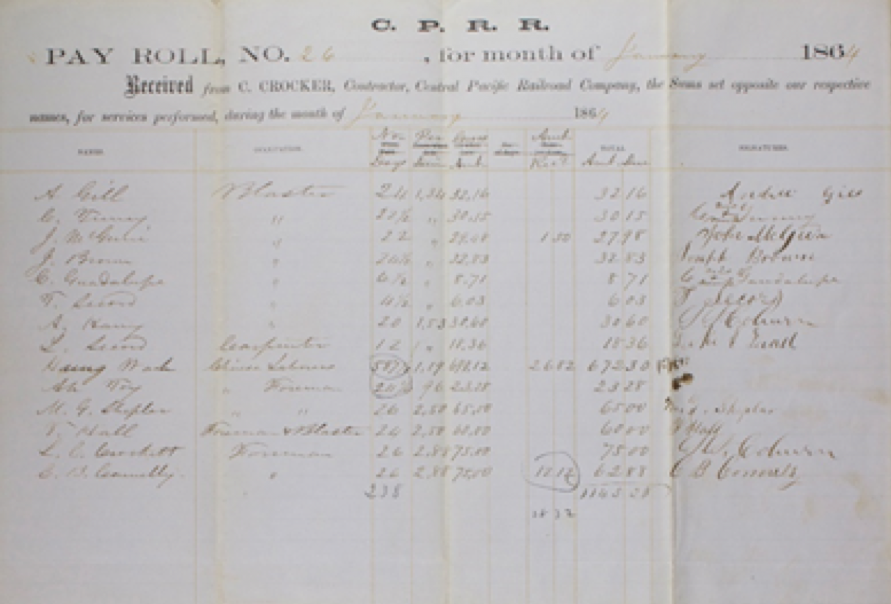

By Lili Nilipour, Research Assistant, Chinese Railroad Workers in North America Project at Stanford.
Lili Nilipour is an undergraduate student at Stanford University.
Coming fresh into the Chinese Railroad Workers Project last summer, I knew little about the subject at hand besides the basics: that the Transcontinental Railroad could not have been built without the thousands of Chinese workers, and that these workers faced great discrimination and hardship when they came to America. This already was compelling enough for me to want to work with the project, but over the course of ten weeks my understanding of the story of the Chinese railroad workers deepened in breadth and complexity. This summer, working with two other research assistants Sabrina Jiang and Preston Carlson, I was able to contribute to the research of this important project as well as learn about this essential narrative to the history of the United States – a narrative, like many others – which was previously left unknown and unearthed.
For the first part of my summer, Sabrina and I spent our time in the Media and Microtext Center in Green Library meticulously scouring microfilm reels for articles pertaining to the Chinese workers. We were chiefly concerned with the question of how the press represented the Chinese, and if we could find any articles that highlighted Chinese individuals, distinct from the otherwise stereotyped, communal portrayal often seen in the papers. In crafting historical narratives from the archives, we try to find “main characters” who once drove the plot of history forward – but in the case of the Chinese workers, these leading figures are hard to find. I specifically focused on the Placer Weekly Argus from 1872 to 1881, and manually scrolled through each page of microfilm to search for any article mentioning the Chinese. Though thorough, this method of research took a large amount of time and close attention because the films can only be reviewed by the human eye and hand.

After a few weeks of this work, I then evaluated all the articles I saved (approximately 250 scans). From this I could see some clear trends in relation to our initial question. In conversation with Sabrina, I decided on four broad categories I could group all the articles into:
- “The Chinese Question”: In the late 19th century, many Americans viewed Chinese immigration as a threat to white labor and employment. Most articles published in the Argus supported the anti-Chinese sentiment of the time.
- Crime reports: Common crimes committed both by and against the Chinese were robberies and murders. Incidents of Chinatowns suffering from fires, whether accidental or purposeful, were also common.
- Orientalism: Tidbits of facts about China reflected a generalized admiration for its “mysterious” culture and technology, in turn flattening the view of the Chinese into a one-dimensional stereotype.
- Chinese as curiosities: Factual articles or humorous fictional stories about the Chinese used the Chinese experience for entertainment or common-interest content. The paper labelling the Chinese as “the Celestials” or the “Heathen Chinese” also shows how alienated they were from the white population.
Overall, the representation of Chinese workers was expectedly not positive. These trends in the papers are consistent with the broad historical understanding of the period. Yet what was perhaps more telling was that not every single article fit into these categories. Occasionally, I found evidence that some Chinese individuals were enterprising enough to make a substantial living or business, and were well-known in their communities. Rather than being a fragmented and ignorant group of people as portrayed in the papers, the Chinese often admirably came together to confound the oppressive system they lived under.
 |
 |
 |
Though many of these divergent accounts of Chinese value those who were able to appeal to the white communities they were in as well, they still represent a method of resistance. If they were to be confined by the oppressive economic system (Chinese railroad workers were paid significantly less than their white coworkers), then why not work within that system to make a life out of it? A man named Hung Wah is a central example of this model – he was able to start his own contracting business, and became very well-known in the railroad enterprise. One of the most exciting moments for me last summer was finding an article that could possibly be about Hung Wah, fitting in to his larger story.
 |
 |
 |
This article relates an incident in which an unknown person set fire to a new laundromat being built by Hung Wah, attributed to “the resentment of adjacent property owners.” Such an event was so terrible and devastating that “not a stick or timber of any kind [was] left standing, and there was not a single board left whole.” This demonstrates to us the frightening acts of terrorism that a successful Chinese businessman in America might have had to face in his own community, and for the perpetrator of the crime to get off free is an even more gut-wrenching insult. I found the article in a newspaper from 1880, a time of Hung Wah’s life that the CRRW project does not have as much information about since it was after the construction of the railroad but before his old age.
As more and more pieces of Hung Wah’s life are found and put together, a significant historical figure comes into shape.Some of the accounts of how he died tell of how he spent much of the later stages of his life in a mental institution, and we wondered why. This article gives us a small but significant hint into the whole story of Hung Wah; not just the story of his entrepreneurial success, but also how his surroundings and community responded to that success: with violence, bitterness, and anger. Being able to reconstruct even the life of one full person gives weight and presence to all the thousands of other immigrants who we may never know anything about. Their exact numbers are unknown: there are no written records of names, no comprehensive lists of workers or, sadly, deaths. They all faced hardship and discrimination like Hung Wah did – and often, in the form of deliberate, vicious acts.
The second part of the summer, Sabrina, Preston, and I worked together with the Stanford Digital Repository to write detailed metadata for railroad payroll records, which would then be accessioned to Stanford Searchworks for anyone to access. These payrolls offer valuable insights to the Chinese workers’ lives and experiences.

The CRRW Project was particularly interested in these payrolls because they show evidence for Chinese workers starting their own contracting businesses, just as Hung Wah did. These contractors seemed to have collected wages for a large number of workers, and then presumably distributed those wages themselves.

Closely examining and recording the details of all these payrolls, we were able to make some general observations about them. Comparing wages between white workers and Chinese workers, the intense discrimination was clear. Chinese were most commonly paid 66 cents per hour, or a flat rate of 25 dollars for 31 days of work. Most Chinese also did not hold the most skilled jobs; when listed individually, they were commonly waiters, cooks, drivers, stewards, dishwashers, and “helpers.” These, and the Chinese contractors, are the only Chinese names we have in the payrolls – almost all of the Chinese laborers’ names are unknown. Even the Chinese names listed are difficult to differentiate, for there are many similar generic names across payrolls. The record-takers were sometimes inconsistent with spelling as well. For example, Hung Wah was also seen as “Hung Wa.”
Though we cannot know the exact number of Chinese workers, we can still gain insight about their role. Tabulating the total work days for Chinese contractors and the total money paid showed that quite substantial amounts of money were paid to Chinese each month. One payroll listed multiple white names, with hundreds of work days to each name, under Hung Wah, suggesting that his business was so large that he perhaps needed men to distribute wages for him. The discovery of the Chinese contractors is part of an emerging narrative of cunning entrepreneurship rather than docile acceptance of oppression. Instead of being weighed down by extremely minimal wages and other hardships, some Chinese saw an opportunity to profit from the very system that was built against them.
As the summer began to come to a close and I wrapped up my research, some questions lingered in my mind as I considered the future possibilities of the project, particularly in terms of the data we collected from the summer. One of the main questions of the history of the Chinese railroad workers – just how many were there? – still remains unanswered, is potentially unanswerable, in fact. What else can we do, then, with these payroll records, which are spotty in their availability and even more unreliable in terms of exact counts? They are, conversely, very telling of the living and working conditions of the Chinese. Part of the metadata we recorded was transcribing all the Chinese names visible on the payrolls, so that researchers can search for these names in the digital repository. So much of this project is about following these slight traces, sniffing out the obscured trails of the past. I would be excited to see connections made with these specific instances of names, which could lead to a further uncovering of hidden individual stories. Some of the articles Sabrina and I unearthed also sometimes mention Chinese immigrants by name – could this point to other prominent figures like Hung Wah, who perhaps have their own traces in the archives?
Needless to say, all the threads of research I participated in are a part of increasing the visibility and reach of the project and its various components. The results of the past years of research has the potential to change the way we view the narrative of the Chinese railroad workers, and it is thus essential that this work is done and made accessible to the public. To have had the opportunity to be a part of this amazing and important initiative has been a wonderful experience. While working on the project I was immersed in historical research and was able to contribute to the process of publication and presentation. I will always carry with me not only the knowledge I learned through this in-depth research, but also the work ethic of attention, collaboration, and dedication that the CRRW Project embodies.